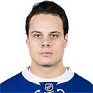

Auston Matthews is an American professional ice hockey player for the Toronto Maple Leafs of the National Hockey League. Previously, Matthews played for the U.S. National U18 Team in the USHL. Widely considered the top prospect of the 2016 NHL Entry Draft, Matthews was drafted first overall by the Toronto Maple Leafs.
In his NHL debut Matthews became the first player in modern NHL history to score four goals in his NHL debut. He scored 40 goals in his first season, the second rookie since the 2004−05 lockout to reach the milestone and the fourth teenager in league history to do so. In the midst of his rookie season, Matthews was ranked the second best active American player in the NHL. He was awarded the 2017 Calder Memorial Trophy as the top NHL rookie.
Born in San Ramon, California, Matthews and his family moved to Scottsdale, Arizona when Matthews was an infant. He learned to play hockey in Arizona, developing an interest after watching the local Phoenix Coyotes, another NHL team play.
Matthews was drafted 57th overall by the Everett Silvertips in the 2012 WHL Bantam Draft but opted to play for the United States National Team Development Program, who play in the junior United States Hockey League. That season he played for the U.S. National U17 Team where he gained national attention from NHL scouts. In his second season with the U.S. National U18 Team, Matthews finished first in league scoring with 116 points breaking the National Team Development Program record of 102. On May 21, 2015, Matthews won the USA Hockey Bob Johnson Award for excellence in international competition.
In late June, Matthews was selected first overall in the 2016 draft by the Toronto Maple Leafs. He had been widely expected to go first overall for over a year leading up to the event, consistently topping prospect charts and major scouting reporters. On July 21, the two parties finalized a deal, with Matthews inking a three-year entry-level contract, which included the maximum allocation of performance bonuses.
Matthews made his NHL debut in the Maple Leafs' first game of the season on October 12, 2016, against the Ottawa Senators. He scored four goals in the game, all against Craig Anderson. This was the first time in modern NHL history a player scored four goals in his debut. On January 10, 2017, Mathews was the only Leafs player selected to participate in the 2017 NHL All-Star Game. On March 28, 2017, Matthews scored his 35th goal of the season, beating Wendel Clark's previous record for most goals in a season (34) by a Leafs' rookie. On April 3rd, Matthews score his 39th goal and 67th point, breaking the franchise record for most points in a season as well as the record for most goals by an American born rookie. A few days later he notched his 40th goal of the season, becoming the second rookie since the 2004–05 lockout to reach the milestone and only the fourth teenager in league history to do so. He would finish the year with 40 goals, good enough for second most in the league. Matthews' play assisted the Maple Leafs in making the playoffs for the first time in a full season since 2004, where the team took on the top seeded Washington Capitals in the first round. After going pointless in the first two games of the series, Matthews scored in each of the last four games as the team was eliminated in six contests by the Capitals. His four consecutive games with a goal marked the first time since 1986 where a teenager scored in four straight playoff games, with Maple Leafs alumnus Wendel Clark being the only other player in league history to accomplish the feat. In recognition for his historic accomplishments throughout the year, Matthews was awarded the Calder Memorial Trophy, as the league's top rookie, with 164 of 167 first-place votes. 
| Year | Games Played | Goals | Assists | Points |
|---|---|---|---|---|
| 2016-2017 ∼ Regular Season | 82 | 40 | 29 | 69 |
| 2016-2017 ∼ Playoffs | 6 | 4 | 1 | 5 |
| 2017-2018 ∼ Regular Season | 51 | 27 | 22 | 49 |
For more stats, check NHL.com